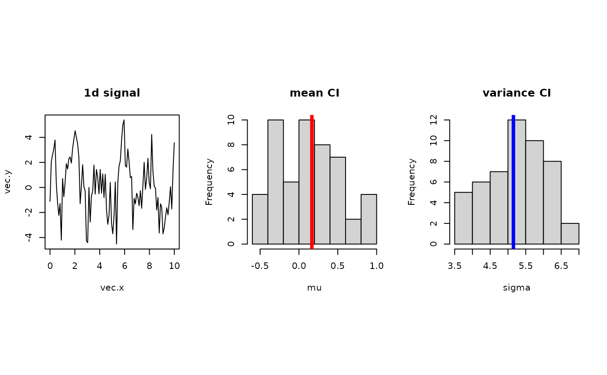

Assuming data being dependent with cardinality N, boot.mblock returns
a vector of index that is used for moving block bootstrapping.
boot.mblock(N, b = max(2, round(N/10)))
| N | the number of observations. |
|---|---|
| b | the size of a block to be drawn. |
a vector of length N for moving block bootstrap sampling.
Kunsch HR (1989). “The Jackknife and the Bootstrap for General Stationary Observations.” The Annals of Statistics, 17(3), 1217--1241.
# \donttest{ ## example : bootstrap confidence interval of mean and variances vec.x = seq(from=0,to=10,length.out=100) vec.y = sin(1.21*vec.x) + 2*cos(3.14*vec.x) + rnorm(100,sd=1.5) data.mu = mean(vec.y) data.var = var(vec.y) ## apply moving block bootstrapping nreps = 50 vec.mu = rep(0,nreps) vec.var = rep(0,nreps) for (i in 1:nreps){ sample.id = boot.mblock(100, b=10) sample.y = vec.y[sample.id] vec.mu[i] = mean(sample.y) vec.var[i] = var(sample.y) print(paste("iteration ",i,"/",nreps," complete.", sep="")) }#> [1] "iteration 1/50 complete." #> [1] "iteration 2/50 complete." #> [1] "iteration 3/50 complete." #> [1] "iteration 4/50 complete." #> [1] "iteration 5/50 complete." #> [1] "iteration 6/50 complete." #> [1] "iteration 7/50 complete." #> [1] "iteration 8/50 complete." #> [1] "iteration 9/50 complete." #> [1] "iteration 10/50 complete." #> [1] "iteration 11/50 complete." #> [1] "iteration 12/50 complete." #> [1] "iteration 13/50 complete." #> [1] "iteration 14/50 complete." #> [1] "iteration 15/50 complete." #> [1] "iteration 16/50 complete." #> [1] "iteration 17/50 complete." #> [1] "iteration 18/50 complete." #> [1] "iteration 19/50 complete." #> [1] "iteration 20/50 complete." #> [1] "iteration 21/50 complete." #> [1] "iteration 22/50 complete." #> [1] "iteration 23/50 complete." #> [1] "iteration 24/50 complete." #> [1] "iteration 25/50 complete." #> [1] "iteration 26/50 complete." #> [1] "iteration 27/50 complete." #> [1] "iteration 28/50 complete." #> [1] "iteration 29/50 complete." #> [1] "iteration 30/50 complete." #> [1] "iteration 31/50 complete." #> [1] "iteration 32/50 complete." #> [1] "iteration 33/50 complete." #> [1] "iteration 34/50 complete." #> [1] "iteration 35/50 complete." #> [1] "iteration 36/50 complete." #> [1] "iteration 37/50 complete." #> [1] "iteration 38/50 complete." #> [1] "iteration 39/50 complete." #> [1] "iteration 40/50 complete." #> [1] "iteration 41/50 complete." #> [1] "iteration 42/50 complete." #> [1] "iteration 43/50 complete." #> [1] "iteration 44/50 complete." #> [1] "iteration 45/50 complete." #> [1] "iteration 46/50 complete." #> [1] "iteration 47/50 complete." #> [1] "iteration 48/50 complete." #> [1] "iteration 49/50 complete." #> [1] "iteration 50/50 complete."## visualize opar <- par(no.readonly=TRUE) par(mfrow=c(1,3), pty="s") plot(vec.x, vec.y, type="l", main="1d signal") # 1d signal hist(vec.mu, main="mean CI", xlab="mu") # mean abline(v=data.mu, col="red", lwd=4) hist(vec.var, main="variance CI", xlab="sigma") # variance